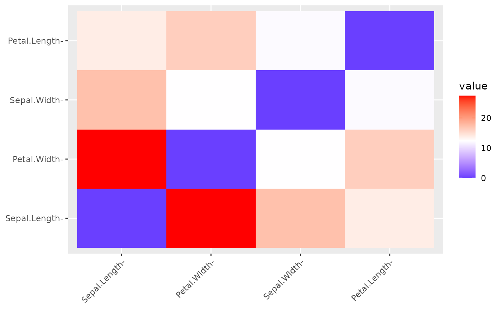

Calculate a dissimilarity matrix
dissimilarity.RdCompute a distance matrix from all pairs of columns or rows in a data frame, using a unified SciViews::R formula interface.
dissimilarity( data, formula = ~., subset = NULL, method = "euclidean", scale = FALSE, rownames.col = "rowname", transpose = FALSE, fun = NULL, ... ) # S3 method for Dissimilarity print(x, digits.d = 3L, rownames.lab = "labels", ...) # S3 method for Dissimilarity labels(object, ...) # S3 method for Dissimilarity nobs(object, ...) # S3 method for Dissimilarity autoplot( object, order = TRUE, show.labels = TRUE, lab.size = NULL, gradient = list(low = "blue", mid = "white", high = "red"), ... ) # S3 method for Dissimilarity chart( data, order = TRUE, show.labels = TRUE, lab.size = NULL, gradient = list(low = "blue", mid = "white", high = "red"), ..., type = NULL, env = parent.frame() )
Arguments
| data | A data.frame, tibble or matrix. |
|---|---|
| formula | A right-side only formula ( |
| subset | An expression indicating which rows to keep from data. |
| method | The distance (dissimilarity) method to use. By default, it is |
| scale | Do we scale (mean = 0, standard deviation = 1) the data before calculating the distance ( |
| rownames.col | In case the |
| transpose | Do we transpose |
| fun | A function that does the calculation and return a |
| ... | Further parameters passed to the |
| x, object | A |
| digits.d | Number of digits to print, by default, 3. |
| rownames.lab | The name of the column containing the labels, by default |
| order | Do we reorder the lines and columns according to their resemblance ( |
| show.labels | Are the labels displayed on the axes ( |
| lab.size | Force the size of the labels ( |
| gradient | The palette of color to use in the plot. |
| type | The type of plot. For the moment, only one plot is possible and the default value ( |
| env | The environment where to evaluate the formula. If you don't understand this, you probably don't have to touch this arguments. |
Value
An S3 object of class c("Dissimilarity", "dist"), thus inheriting from dist. A Dissimilarity object is better displayed (specific print() method), and has also dedicated methods labels() (get line and column labels), nobs() (get number of observations, that is, number of lines or columns), autoplot() (generate a ggplot2 from the matrix) and chart() (generate a chart version of the ggplot2).
See also
Examples
SciViews::R read("iris", package = "datasets") %>.% select(., -species) -> iris_num # Only numeric columns from iris # Compare the 150 flowers and nicely print the result dissimilarity(iris_num, method = "manhattan")#> Dissimilarity matrix with metric: manhattan #> # A tibble: 150 × 150 #> labels `1` `2` `3` `4` `5` `6` `7` `8` `9` `10` `11` #> <chr> <dst> <dst> <dst> <dst> <dst> <dst> <dst> <dst> <dst> <dst> <dst> #> 1 1 #> 2 2 0.7 #> 3 3 0.8 0.5 #> 4 4 1.0 0.5 0.4 #> 5 5 0.2 0.7 0.8 1.0 #> 6 6 1.2 1.9 2.0 2.0 1.2 #> 7 7 0.7 0.8 0.5 0.5 0.7 1.7 #> 8 8 0.3 0.6 0.7 0.7 0.3 1.3 0.6 #> 9 9 1.3 0.6 0.7 0.5 1.3 2.5 0.8 1.2 #> 10 10 0.8 0.3 0.6 0.4 0.8 1.8 0.9 0.5 0.9 #> # … with 140 more rows, and 138 more variables: 12 <dst>, 13 <dst>, 14 <dst>, #> # 15 <dst>, 16 <dst>, 17 <dst>, 18 <dst>, 19 <dst>, 20 <dst>, 21 <dst>, #> # 22 <dst>, 23 <dst>, 24 <dst>, 25 <dst>, 26 <dst>, 27 <dst>, 28 <dst>, #> # 29 <dst>, 30 <dst>, 31 <dst>, 32 <dst>, 33 <dst>, 34 <dst>, 35 <dst>, #> # 36 <dst>, 37 <dst>, 38 <dst>, 39 <dst>, 40 <dst>, 41 <dst>, 42 <dst>, #> # 43 <dst>, 44 <dst>, 45 <dst>, 46 <dst>, 47 <dst>, 48 <dst>, 49 <dst>, #> # 50 <dst>, 51 <dst>, 52 <dst>, 53 <dst>, 54 <dst>, 55 <dst>, 56 <dst>, …# Compare the measurements by transposing and scaling them first iris_dist <- dissimilarity(iris_num, method = "euclidean", scale = TRUE, transpose = TRUE) iris_dist#> Dissimilarity matrix with metric: euclidean (transposed then scaled data) #> # A tibble: 4 × 4 #> labels sepal_length sepal_width petal_length #> <chr> <dst> <dst> <dst> #> 1 sepal_length #> 2 sepal_width 17.254 #> 3 petal_length 13.802 12.063 #> 4 petal_width 27.409 12.340 16.209#> [1] "Dissimilarity" "dist"#> [1] "sepal_length" "sepal_width" "petal_length" "petal_width"#> [1] 4# specific plots autoplot(iris_dist)